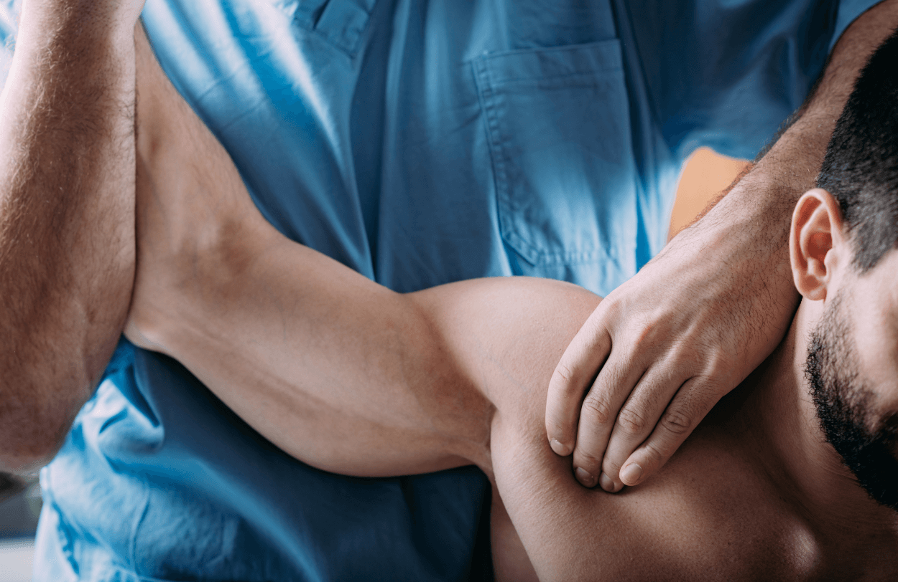

Športová masáž
Je veľmi podobná klasickej masáži, je však prispôsobená špeciálne pre športovcov a osoby, ktoré podávajú zložitejšie fyzické výkony. Od klasickej masáže sa líši najmä v rytme a intenzite masážnych hmatov. Slúži v prvom rade na zvýšenie kondície a uvoľnenie po náročnej fyzickej záťaži. Zároveň je vynikajúcou voľbou z hľadiska prevencie pri úrazoch. A čo je veľmi dôležité, nemalou mierou vplýva na naše psychické rozpoloženie, a tým na podané výkony.
Druhy športovej masáže
 Športovú masáž delíme podľa toho, kedy sa vykonáva. Pred výkonom je vhodná buď masáž upokojujúca, ktorá zbavuje športovca nervozity a trémy, alebo povzbudzujúca, ktorá je viac dráždivá. Jej význam spočíva v naladení tela na maximálne výkony. Veľmi nápomocná je masáž v prestávkach medzi výkonmi, kedy sa športovci zachraňujú pred kŕčmi. Dôležitá je tiež relaxačná masáž po výkone. Svaly sa pri nej skvele uvoľnia, detoxikujú a zregenerujú. Práve preto sa pri nej volí pomalé tempo a jemné hmaty. Nezabudnime ani na masáž kondičnú, resp. udržiavaciu, ktorá je dlhodobá a má v prvom rade dráždivý charakter. Masáže sa tiež líšia podľa toho, aký druh športu sa vykonáva. Pri každej aktivite zapájame iné druhy svalov, preto sa masér venuje presne tým partiám, ktoré sú najviac zaťažené a prispôsobuje sa individuálnym potrebám konkrétneho klienta. Aby sa masážou dosiahol maximálny účinok, mali by ste si na ňu nájsť čas minimálne raz za týždeň.
Kedy sa športovej masáži radšej vyhnúť
Aj napriek tomu, že masáž je príjemná a veľmi obľúbená technika, niekedy znamená menej viac. Vyhnúť sa jej treba pri akútnych zápalových ochoreniach, pooperačných stavoch, aj po čerstvých poraneniach. Neodporúča sa tiež pri bolestiach, ktoré vystreľujú do hrudníka a končatín. Riaďte sa jednoducho vlastným pocitom a ak sa bolesť po masáži zhoršuje a necítite sa po nej dobre, najbližšie ju vynechajte. Naopak, masáž môže byť veľmi prospešná pri unavených a natiahnutých svaloch chrbta. Kvalitný masér vám vie uvoľniť napätie v svaloch a zároveň zvýšiť ich prekrvenie. Tým prispeje k omnoho rýchlejšiemu procesu regenerácie. Treba si byť ale vedomý toho, že niektoré problémy sa nedajú vyriešiť len pomocou masáže a je potrebná hĺbková a komplexná liečba rehabilitáciou. Nezabúdajte ani na kvalitný strečing pred každým cvičením a dostatočný príjem vitamínov skupiny B. Prečo vyskúšať športovú masáž. Ak radi športujete a zároveň obľubujete relax, vyskúšajte tento druh masáže. Budete milo prekvapení, koľko pozitívnych účinkov na vašom tele zanechá.